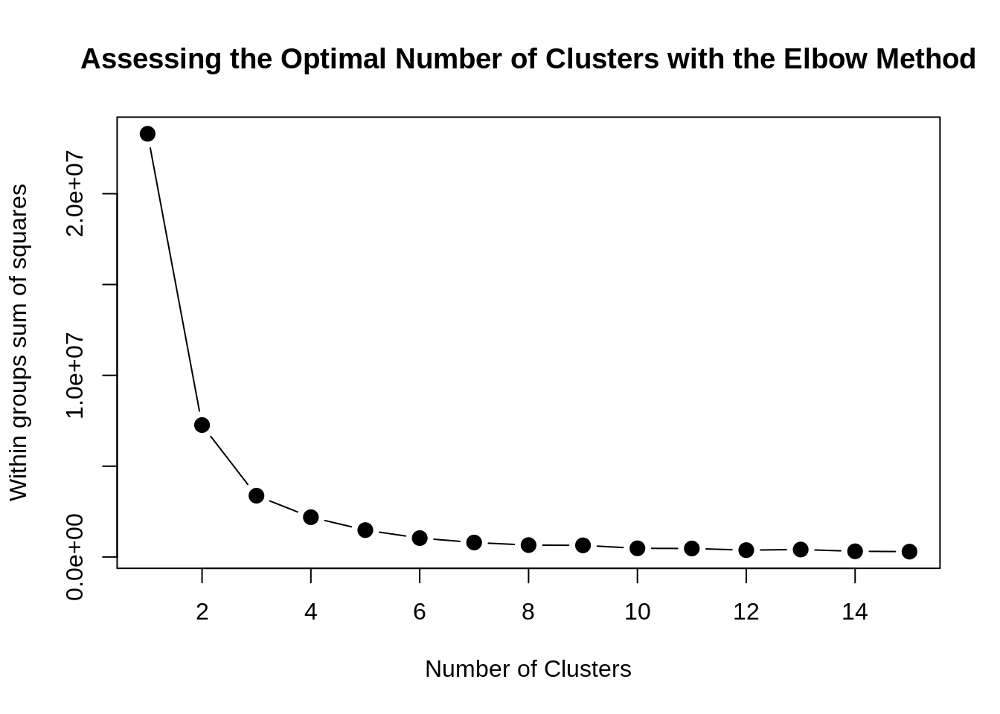
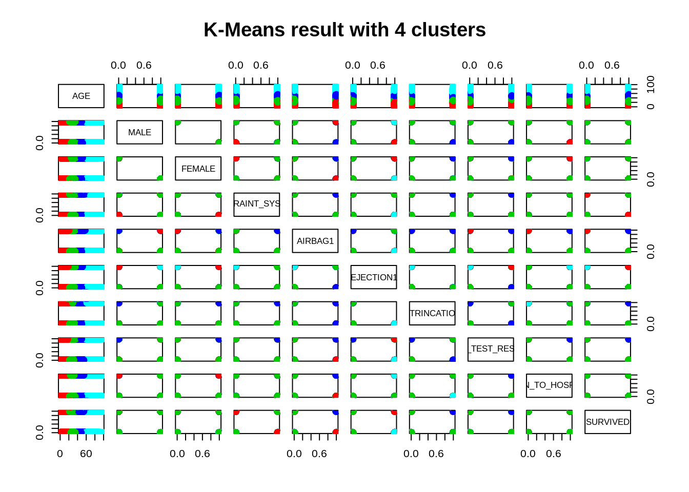
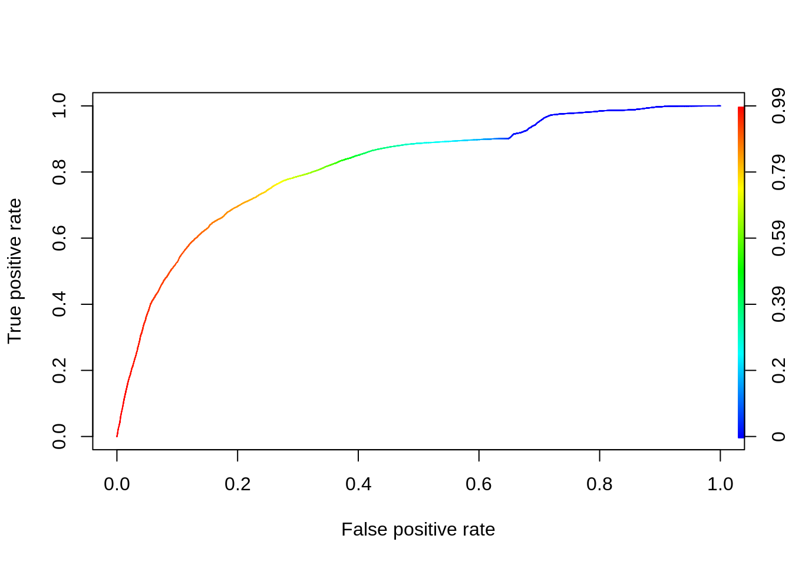
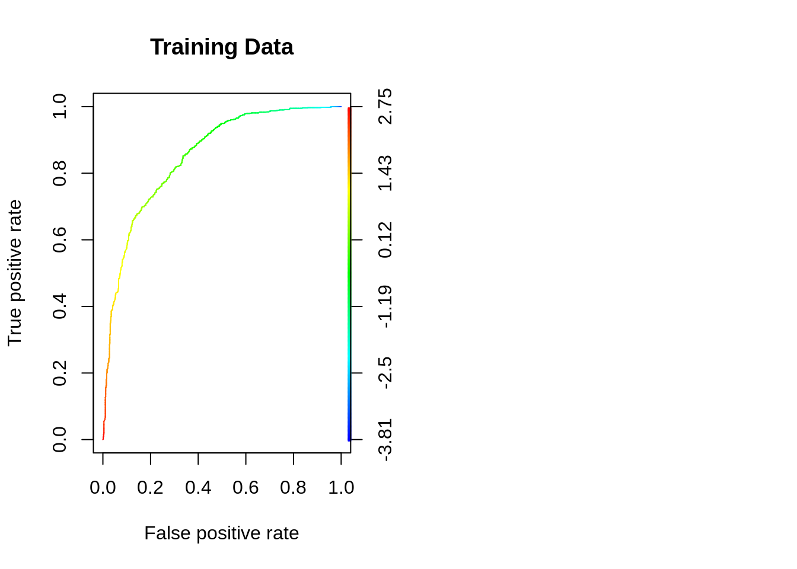
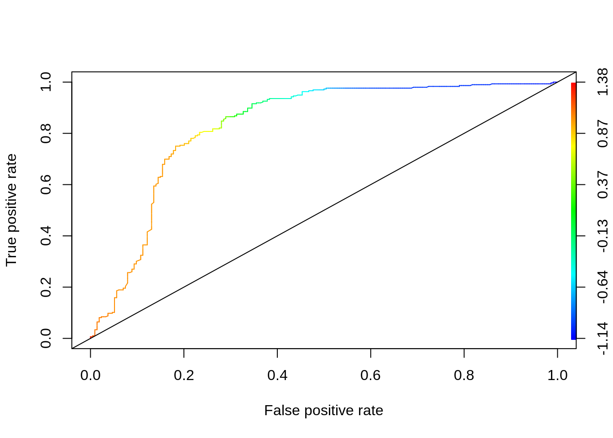
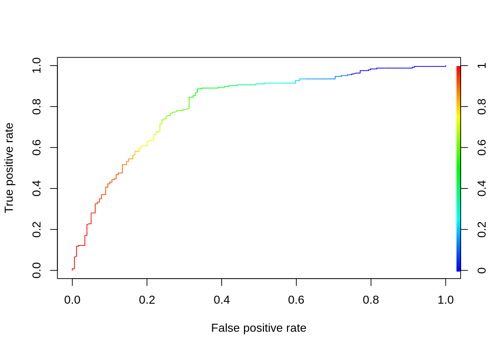
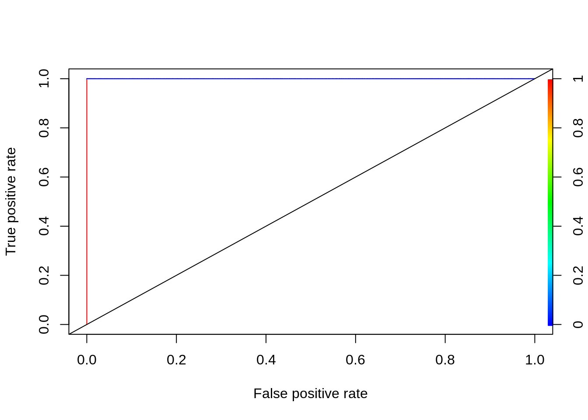
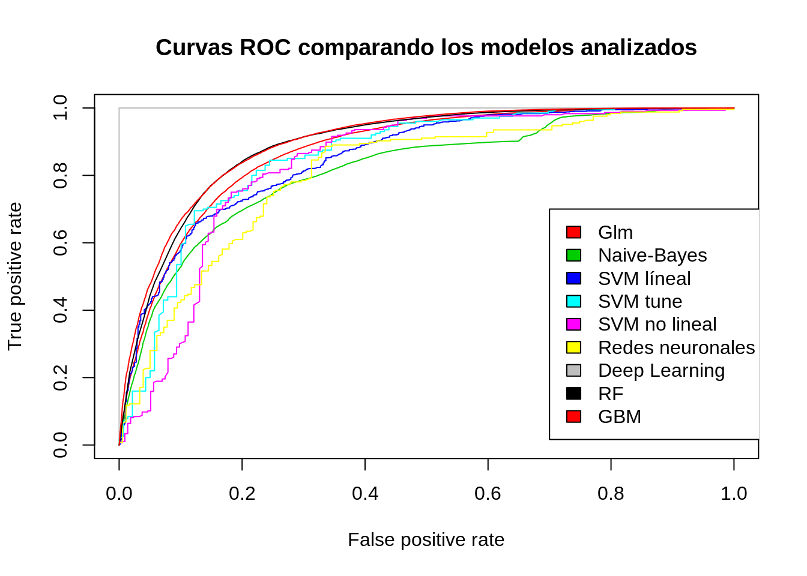

7 Transformación a problema binario para calculo de kmeans
summary(train.data.reduced)## AGE SEX RESTRAINT_SYSTEM.USE
## Min. : 0.00 Male :45425 No :28585
## 1st Qu.:20.00 Female:23192 Yes :29992
## Median :32.00 Other: 4980
## Mean :35.52 NA's : 5060
## 3rd Qu.:48.00
## Max. :97.00
##
## AIR_BAG_AVAILABILITY.DEPLOYMENT EJECTION
## NAv :40188 Not_Ejected :59480
## D_F :10564 Totally_Ejected : 7215
## Av_nD : 6510 Partially_Ejected: 1537
## A_U : 5190 NA's : 385
## NM : 4412
## (Other): 267
## NA's : 1486
## EXTRICATION DRUG_TEST_RESULTS TAKEN_TO_HOSPITAL
## Not_Extricated:61116 Negd:43308 Yes :36135
## Extricated : 6907 Posd:20743 No :31515
## NA's : 594 NA's: 4566 NA's: 967
##
##
##
##
## INJURY_SEVERITY
## Died :29295
## Survived:39322
##
##
##
##
## # Tratamiento AGE
train.data.reduced$AGE1 <- train.data.reduced$AGE
# Tratamiento SEX
train.data.reduced$MALE[which(train.data.reduced$SEX == 'Male')] <-1
train.data.reduced$MALE[which(train.data.reduced$SEX != 'Male')] <-0
train.data.reduced$FEMALE[which(train.data.reduced$SEX != 'Female')] <-0
train.data.reduced$FEMALE[which(train.data.reduced$SEX == 'Female')] <-1
# Tratamiento RESTRAINT_SYSTEM.USE
train.data.reduced$RESTRAINT_SYSTEM1[which(train.data.reduced$RESTRAINT_SYSTEM.USE == 'Yes')] <-1
train.data.reduced$RESTRAINT_SYSTEM1[which(train.data.reduced$RESTRAINT_SYSTEM.USE != 'Yes')] <-0
train.data.reduced$RESTRAINT_SYSTEM1[which(is.na(train.data.reduced$RESTRAINT_SYSTEM.USE))] <-NA
# Tratamiento AIR_BAG_AVAILABILITY.DEPLOYMENT
train.data.reduced$AIRBAG1[which(train.data.reduced$AIR_BAG_AVAILABILITY.DEPLOYMENT == 'NAv' |
train.data.reduced$AIR_BAG_AVAILABILITY.DEPLOYMENT == 'Av_nD' |
train.data.reduced$AIR_BAG_AVAILABILITY.DEPLOYMENT == 'NM' |
train.data.reduced$AIR_BAG_AVAILABILITY.DEPLOYMENT == '(Other)')] <-0
train.data.reduced$AIRBAG1[which(train.data.reduced$AIR_BAG_AVAILABILITY.DEPLOYMENT == 'D_F' |
train.data.reduced$AIR_BAG_AVAILABILITY.DEPLOYMENT == 'A_U')] <-1
train.data.reduced$AIRBAG1[which(is.na(train.data.reduced$AIR_BAG_AVAILABILITY.DEPLOYMENT ))] <-NA
# Tratamiento EJECTION
train.data.reduced$EJECTION1[which(train.data.reduced$EJECTION != 'Totally_Ejected')] <-0
train.data.reduced$EJECTION1[which(train.data.reduced$EJECTION == 'Totally_Ejected')] <-1
train.data.reduced$EJECTION1[which(is.na(train.data.reduced$EJECTION))] <-NA
# Tratamiento EXTRINCATION
train.data.reduced$EXTRINCATION1[which(train.data.reduced$EXTRICATION == 'Not_Extricated')] <-0
train.data.reduced$EXTRINCATION1[which(train.data.reduced$EXTRICATION == 'Extricated')] <-1
train.data.reduced$EXTRINCATION1[which(is.na(train.data.reduced$EXTRICATION))] <-NA
#Tratamiento DRUG_TEST_RESULTS
train.data.reduced$DRUG_TEST_RESULTS1[which(train.data.reduced$DRUG_TEST_RESULTS == 'Negd')] <-0
train.data.reduced$DRUG_TEST_RESULTS1[which(train.data.reduced$DRUG_TEST_RESULTS == 'Posd')] <-1
train.data.reduced$DRUG_TEST_RESULTS1[which(is.na(train.data.reduced$DRUG_TEST_RESULTS))] <-NA
#Tratamiento TAKEN_TO_HOSPITAL
train.data.reduced$TAKEN_TO_HOSPITAL1[which(train.data.reduced$TAKEN_TO_HOSPITAL == 'No')] <-0
train.data.reduced$TAKEN_TO_HOSPITAL1[which(train.data.reduced$TAKEN_TO_HOSPITAL == 'Yes')] <-1
train.data.reduced$TAKEN_TO_HOSPITAL1[which(is.na(train.data.reduced$TAKEN_TO_HOSPITAL))] <-NA
#Tratamiento SURVIVED
train.data.reduced$SURVIVED[which(train.data.reduced$INJURY_SEVERITY == 'Survived')] <-1
train.data.reduced$SURVIVED[which(train.data.reduced$INJURY_SEVERITY == 'Died')] <-0
train.data.reduced.numeric = train.data.reduced[,c("AGE","MALE","FEMALE", "RESTRAINT_SYSTEM1", "AIRBAG1", "EJECTION1", "EXTRINCATION1", "DRUG_TEST_RESULTS1", "TAKEN_TO_HOSPITAL1", "SURVIVED")]
summary(train.data.reduced.numeric)## AGE MALE FEMALE RESTRAINT_SYSTEM1
## Min. : 0.00 Min. :0.000 Min. :0.000 Min. :0.000
## 1st Qu.:20.00 1st Qu.:0.000 1st Qu.:0.000 1st Qu.:0.000
## Median :32.00 Median :1.000 Median :0.000 Median :0.000
## Mean :35.52 Mean :0.662 Mean :0.338 Mean :0.472
## 3rd Qu.:48.00 3rd Qu.:1.000 3rd Qu.:1.000 3rd Qu.:1.000
## Max. :97.00 Max. :1.000 Max. :1.000 Max. :1.000
## NA's :5060
## AIRBAG1 EJECTION1 EXTRINCATION1 DRUG_TEST_RESULTS1
## Min. :0.0000 Min. :0.0000 Min. :0.0000 Min. :0.000
## 1st Qu.:0.0000 1st Qu.:0.0000 1st Qu.:0.0000 1st Qu.:0.000
## Median :0.0000 Median :0.0000 Median :0.0000 Median :0.000
## Mean :0.2356 Mean :0.1057 Mean :0.1015 Mean :0.324
## 3rd Qu.:0.0000 3rd Qu.:0.0000 3rd Qu.:0.0000 3rd Qu.:1.000
## Max. :1.0000 Max. :1.0000 Max. :1.0000 Max. :1.000
## NA's :1753 NA's :385 NA's :594 NA's :4566
## TAKEN_TO_HOSPITAL1 SURVIVED
## Min. :0.0000 Min. :0.0000
## 1st Qu.:0.0000 1st Qu.:0.0000
## Median :1.0000 Median :1.0000
## Mean :0.5341 Mean :0.5731
## 3rd Qu.:1.0000 3rd Qu.:1.0000
## Max. :1.0000 Max. :1.0000
## NA's :967Ahora vamos a hacer el cáculo de kmeans
train.data.reduced.numeric.withoutna = na.omit(train.data.reduced.numeric)
summary(train.data.reduced.numeric.withoutna)## AGE MALE FEMALE RESTRAINT_SYSTEM1
## Min. : 0.00 Min. :0.0000 Min. :0.0000 Min. :0.0000
## 1st Qu.:20.00 1st Qu.:0.0000 1st Qu.:0.0000 1st Qu.:0.0000
## Median :32.00 Median :1.0000 Median :0.0000 Median :0.0000
## Mean :35.44 Mean :0.6516 Mean :0.3484 Mean :0.4775
## 3rd Qu.:48.00 3rd Qu.:1.0000 3rd Qu.:1.0000 3rd Qu.:1.0000
## Max. :97.00 Max. :1.0000 Max. :1.0000 Max. :1.0000
## AIRBAG1 EJECTION1 EXTRINCATION1 DRUG_TEST_RESULTS1
## Min. :0.0000 Min. :0.0000 Min. :0.00000 Min. :0.0000
## 1st Qu.:0.0000 1st Qu.:0.0000 1st Qu.:0.00000 1st Qu.:0.0000
## Median :0.0000 Median :0.0000 Median :0.00000 Median :0.0000
## Mean :0.2288 Mean :0.1048 Mean :0.09983 Mean :0.3182
## 3rd Qu.:0.0000 3rd Qu.:0.0000 3rd Qu.:0.00000 3rd Qu.:1.0000
## Max. :1.0000 Max. :1.0000 Max. :1.00000 Max. :1.0000
## TAKEN_TO_HOSPITAL1 SURVIVED
## Min. :0.0000 Min. :0.0000
## 1st Qu.:0.0000 1st Qu.:0.0000
## Median :1.0000 Median :1.0000
## Mean :0.5402 Mean :0.5872
## 3rd Qu.:1.0000 3rd Qu.:1.0000
## Max. :1.0000 Max. :1.0000head(train.data.reduced.numeric.withoutna)## AGE MALE FEMALE RESTRAINT_SYSTEM1 AIRBAG1 EJECTION1 EXTRINCATION1
## 72930 23 1 0 0 0 1 0
## 88607 51 1 0 1 0 0 0
## 76925 27 1 0 0 0 0 1
## 46210 27 1 0 1 1 0 0
## 16945 30 1 0 1 1 0 1
## 32917 30 1 0 0 1 0 0
## DRUG_TEST_RESULTS1 TAKEN_TO_HOSPITAL1 SURVIVED
## 72930 0 0 0
## 88607 0 1 1
## 76925 1 0 0
## 46210 0 0 1
## 16945 1 1 0
## 32917 0 1 1# Definir el número de cluster sobre los que debemos de trabajar
mydata <- train.data.reduced.numeric.withoutna
wss <- (nrow(mydata)-1)*sum(apply(mydata,2,var))
for (i in 2:15) wss[i] <- sum(kmeans(mydata,
centers=i)$withinss)
plot(1:15, wss, type="b", xlab="Number of Clusters",
ylab="Within groups sum of squares",
main="Assessing the Optimal Number of Clusters with the Elbow Method",
pch=20, cex=2)
# Seleccionamos 4 clusters
km = kmeans(train.data.reduced.numeric.withoutna,4)
# Plot results
plot(train.data.reduced.numeric.withoutna, col =(km$cluster +1) , main="K-Means result with 4 clusters", pch=20, cex=2)
7.1 NAIVE-BAYES
A continuación analizaremos los datos desde la perspectiva del algoritmo de Naive-Bayes.Es decir, mediante Naive-Bayes analizaremos el modelo que mejor clasifique los datos según la variable respuesta en “Died” o “Survived”
7.1.1 Ejecución del modelo
library(e1071)##
## Attaching package: 'e1071'## The following object is masked from 'package:Hmisc':
##
## impute#tomamos los predictores significativos para nuestro análisis (fueron obtenidos mediante regresión logística, en pasos previos)
train.data.reduced = train.data.reduced[,c("AGE","SEX", "RESTRAINT_SYSTEM1", "AIRBAG1", "EJECTION1", "EXTRINCATION1", "DRUG_TEST_RESULTS1", "TAKEN_TO_HOSPITAL1","INJURY_SEVERITY")]
# Para la evaluación del modelo se calcula la probabilidad de INJURY_SEVERITY = True, tanto en train como en test
nb.fars.train=naiveBayes(INJURY_SEVERITY ~., data=train.data.reduced)
nb.predict.train=predict(nb.fars.train,train.data.reduced)
z<-table(nb.predict.train,train.data.reduced$INJURY_SEVERITY)
precision <- z[2,2]/(z[2,1]+z[2,2])
recall <- z[2,2]/(z[1,2]+z[2,2])
f_score.nb <- (2*precision*recall)/(precision+recall)
f_score.nb## [1] 0.7907941nb.fars.train=naiveBayes(INJURY_SEVERITY ~., data=train.data.reduced)
nb.predict.train=predict(nb.fars.train,train.data.reduced)
table(nb.predict.train,train.data.reduced$INJURY_SEVERITY )##
## nb.predict.train Died Survived
## Died 18178 6336
## Survived 11117 32986library(ggplot2)
probs <- predict(nb.fars.train, train.data.reduced, type="raw")
pred <- prediction(probs[, "Survived"], train.data.reduced$INJURY_SEVERITY)
perf_nb <- performance(pred, measure='tpr', x.measure='fpr')
plot(perf_nb, colorize=TRUE)
Como se puede ver, la precisión es del 72%, que es inferior a los análisis mediante los algoritmos anteriormente mostrados. A continuación, evaluaremos el modelo para el conjunto de test:
# Para la evaluación del modelo se calcula la probabilidad de INJURY_SEVERITY = True, tanto en train como en test
nb.fars.test=naiveBayes(INJURY_SEVERITY ~., data=test.data)
nb.predict.test=predict(nb.fars.test,test.data)
z<-table(nb.predict.test,test.data$INJURY_SEVERITY)
precision <- z[2,2]/(z[2,1]+z[2,2])
recall <- z[2,2]/(z[1,2]+z[2,2])
f_score <- (2*precision*recall)/(precision+recall)
f_score## [1] 0.9423001Vamos a analizar qué ocurriría con nuestro modelo en el caso de que eliminásemos filas con datos NA:
train.data.reduced.no.na <- na.omit(train.data.reduced)Probamos el algoritmo con los datos de train:
nb.fars.train.no.na=naiveBayes(INJURY_SEVERITY ~., data=train.data.reduced.no.na)
nb.predict.train.no.na=predict(nb.fars.train.no.na,train.data.reduced.no.na)
z<- table(nb.predict.train.no.na,train.data.reduced.no.na$INJURY_SEVERITY)
precision <- z[2,2]/(z[2,1]+z[2,2])
recall <- z[2,2]/(z[1,2]+z[2,2])
f_score <- (2*precision*recall)/(precision+recall)
f_score## [1] 0.8030249Si bien se mejora algo la precisión, la mejora no es muy significativa.
7.2 Análisis del modelo mediante SVM Lineal
Es un método de clasificación que separa datos usando hiperplanos. Si etiquetamos los datos, podemos usar SVM para generar múltiples hiperplanos de forma que cada uno de los espacios delimitados por los hiperplanos, contengan un tipo de dato. En nuestro caso, los hiperplanos separarían los datos de los supervivientes de los de fallecidos.
# Vamos a crear un pequeño dataset, para probar el modelo, para la agilizar la ejecución (problemas de memoria)
set.seed(123456)
data.reduced.svm <- na.omit(train.data.reduced)
reduce.svm.index = sample(1:nrow(data.reduced.svm), dim(data.reduced.svm)*0.1)
data.reduced.svm <- data.reduced.svm[reduce.svm.index, ]El conjunto que usaremos para nuestras pruebas de SVM constará de las siguientes filas:
dim(data.reduced.svm)## [1] 5658 9A continuación, sobre ese conjunto anteriormente creado, haremos dos particiones, una para train y otra para test
train.svm.index = sample(1:nrow(data.reduced.svm), dim(data.reduced.svm)*0.7)
train.svm.data = data.reduced.svm[train.svm.index, ]
test.svm.data = data.reduced.svm[-train.svm.index, ]dim (train.svm.data)## [1] 3960 9dim(test.svm.data)## [1] 1698 9library(e1071)
model_svm = svm(INJURY_SEVERITY ~ ., data = train.svm.data, kernel = "linear",cost = 10, type = "C-classification", scale = FALSE, probability = TRUE)
pred.svm <- predict(model_svm, train.svm.data)
z<- table( pred.svm, train.svm.data$INJURY_SEVERITY)
precision <- z[2,2]/(z[2,1]+z[2,2])
recall <- z[2,2]/(z[1,2]+z[2,2])
f_score.svm.lineal <- (2*precision*recall)/(precision+recall)
f_score.svm.lineal## [1] 0.8060517Para poder representar nuestras predicciones con el paquete ROCR, necesitamos que sean continuas. Sin embargo, al ejecutar predict con nuestro model de svm devuelve la clase a la que pertenece cada observación (no es un resultado continuo). Por ello, necesitaremosd crear una función, que contendrá como parámetros el número de aciertos para cada observación, pred, y un vector que contiene la clase a la que pertenece cada observación (“Died”,“Survived”), truth
rocplot =function (pred , truth ,color, ...){
predob = prediction (pred , truth )
perf = performance (predob , "tpr", "fpr")
if (is.na(color)) {
plot(perf , colorize=TRUE , ...)
}else{
plot(perf , add=TRUE, col=color,...)
}
}svm.pred<-predict(model_svm, test.svm.data, decision.values = TRUE,
probability = TRUE)
table(svm.pred, test.svm.data$INJURY_SEVERITY)##
## svm.pred Died Survived
## Died 476 187
## Survived 208 827fitted_svm_lineal =attributes(predict(model_svm ,test.svm.data , decision.values =TRUE))$decision.values
par(mfrow =c(1,2))
rocplot (fitted_svm_lineal,test.svm.data$INJURY_SEVERITY, NA, main="Training Data")
Precisión del modelo en el conjunto de test:
model_svm = svm(INJURY_SEVERITY ~ ., data = test.svm.data, kernel = "linear",cost = 10, type = "C-classification", scale = FALSE)
pred <- predict(model_svm, test.svm.data)
z<- table( pred, test.svm.data$INJURY_SEVERITY)
precision <- z[2,2]/(z[2,1]+z[2,2])
recall <- z[2,2]/(z[1,2]+z[2,2])
f_score <- (2*precision*recall)/(precision+recall)
f_score## [1] 0.8144231A continuación, analizaremos los datos intentado crear un modelo mediante la función “tune”, que elegirá los mejores parámetros para nuestro modelo
Para el conjunto de train:
El siguiente modelo, es muy demandante computacionalmente. Por problemas de memoria, reduciremos aún más el conjunto de datos de train y test.
train.svm.tuned.index = sample(1:nrow(train.svm.data), dim(train.svm.data)*0.1)
train.svm.data.tuned = train.svm.data[train.svm.tuned.index, ]
test.svm.tuned.index = sample(1:nrow(test.svm.data), dim(test.svm.data)*0.2)
test.svm.data.tuned = test.svm.data[test.svm.tuned.index, ]dim(train.svm.data.tuned)## [1] 396 9dim(test.svm.data.tuned)## [1] 339 9tuned_train <- tune.svm(INJURY_SEVERITY ~ ., data = train.svm.data.tuned, gamma = 10^(-10:2),
cost = 10^(-1:1), probability = TRUE)
svm.best.model_train <-tuned_train$best.modelMostramos la curva ROC
svm.pred.tuned<-predict(svm.best.model_train, test.svm.data.tuned, decision.values = TRUE,
probability = TRUE)
table(svm.pred.tuned, test.svm.data.tuned$INJURY_SEVERITY)##
## svm.pred.tuned Died Survived
## Died 87 18
## Survived 52 182fitted_svm_tune =attributes(predict(svm.best.model_train ,test.svm.data.tuned , decision.values =TRUE))$decision.values
par(mfrow =c(1,2))
rocplot (fitted_svm_tune,test.svm.data.tuned$INJURY_SEVERITY, NA, main="Training Data")
tuned_train$best.model##
## Call:
## best.svm(x = INJURY_SEVERITY ~ ., data = train.svm.data.tuned,
## gamma = 10^(-10:2), cost = 10^(-1:1), probability = TRUE)
##
##
## Parameters:
## SVM-Type: C-classification
## SVM-Kernel: radial
## cost: 1
## gamma: 0.1
##
## Number of Support Vectors: 216dim(train.svm.data)## [1] 3960 9z<- table(predict = svm.pred.tuned,truth = test.svm.data.tuned$INJURY_SEVERITY)
precision <- z[2,2]/(z[2,1]+z[2,2])
recall <- z[2,2]/(z[1,2]+z[2,2])
f_score.svm.tuned <- (2*precision*recall)/(precision+recall)
f_score.svm.tuned## [1] 0.8387097Para el conjunto de test:
# tomaremos el conjunto de test creado anteriormente como nuestro conjunto de datos padre. A partir de él, creamos dos particiones, una de train y una de test:
train.svm.tuned.index.test = sample(1:nrow(test.svm.data), dim(test.svm.data)*0.7)
train.svm.data.tuned.test = test.svm.data[train.svm.tuned.index.test, ]
test.svm.data.tuned.test = test.svm.data[-train.svm.tuned.index.test, ]
dim(train.svm.data.tuned.test)## [1] 1188 9dim(test.svm.data.tuned.test)## [1] 510 9library(e1071)
tuned_test <- tune.svm(INJURY_SEVERITY ~ ., data = train.svm.data.tuned.test, gamma = 10^(-10:2),
cost = 10^(-1:1))
svm.best.model_test <-tuned_test$best.model
svm.best.model_test <-tuned_test$best.model
pred_test <- predict(svm.best.model_test, test.svm.data.tuned.test)
z<- table(predict = pred_test,truth = test.svm.data.tuned.test$INJURY_SEVERITY)
precision <- z[2,2]/(z[2,1]+z[2,2])
recall <- z[2,2]/(z[1,2]+z[2,2])
f_score <- (2*precision*recall)/(precision+recall)
f_score## [1] 0.8497724train.svm.no.lineal =train.svm.data.tuned.test
test.svm.no.lineal = test.svm.data.tuned.test7.3 Análisis del modelo mediante SVM NO Lineal
7.3.1 Libreria empleada: Caret
library(caret)
set.seed(825)
fitControl <- trainControl(method = "repeatedcv",
number = 10,
repeats = 10,
classProbs = TRUE,
summaryFunction = twoClassSummary)
svmFit <- train(INJURY_SEVERITY ~ ., data = train.svm.data,
method = "svmRadial",
trControl = fitControl,
preProc = c("center", "scale"),
tuneLength = 8,
metric = "ROC")## line search fails -1.39233 0.005475466 1.078963e-05 -7.637e-06 -2.763048e-08 2.243066e-08 -4.694255e-13line search fails -1.403825 0.06394359 1.113863e-05 -8.742564e-06 -3.097183e-08 2.70522e-08 -5.814894e-13line search fails -1.303205 -0.001314716 1.317324e-05 -9.086164e-06 -3.143832e-08 2.627709e-08 -6.529026e-13line search fails -1.22932 -0.01864636 1.132456e-05 -7.558468e-06 -2.535711e-08 2.135812e-08 -4.485928e-13line search fails -1.304259 0.01342165 1.13828e-05 -8.135649e-06 -2.774187e-08 2.389128e-08 -5.101512e-13line search fails -1.363568 0.0002851444 1.059965e-05 -7.48665e-06 -2.667773e-08 2.175609e-08 -4.45655e-13line search fails -1.354012 -0.028591 1.095059e-05 -7.012461e-06 -2.587419e-08 1.994288e-08 -4.231862e-13line search fails -1.326098 0.01347042 1.235135e-05 -9.018201e-06 -3.090101e-08 2.646395e-08 -6.203264e-13line search fails -1.365108 0.01138894 1.296409e-05 -9.507014e-06 -3.287594e-08 2.795147e-08 -6.919415e-13line search fails -1.402015 0.04650833 1.171968e-05 -8.877884e-06 -3.178993e-08 2.709444e-08 -6.13109e-13line search fails -1.336039 0.003245259 1.129924e-05 -7.884501e-06 -2.796401e-08 2.302368e-08 -4.975024e-13svmFit ## Support Vector Machines with Radial Basis Function Kernel
##
## 3960 samples
## 8 predictor
## 2 classes: 'Died', 'Survived'
##
## Pre-processing: centered (8), scaled (8)
## Resampling: Cross-Validated (10 fold, repeated 10 times)
## Summary of sample sizes: 3564, 3564, 3564, 3564, 3564, 3564, ...
## Resampling results across tuning parameters:
##
## C ROC Sens Spec
## 0.25 0.8500601 0.6455422 0.8949565
## 0.50 0.8413757 0.6462651 0.8957391
## 1.00 0.8334247 0.6460843 0.8948261
## 2.00 0.8293747 0.6428313 0.8938696
## 4.00 0.8242584 0.6400000 0.8945217
## 8.00 0.8098770 0.6374984 0.8935903
## 16.00 0.8042813 0.6391817 0.8913949
## 32.00 0.8037757 0.6364207 0.8892663
##
## Tuning parameter 'sigma' was held constant at a value of 0.1057757
## ROC was used to select the optimal model using the largest value.
## The final values used for the model were sigma = 0.1057757 and C = 0.25.7.3.2 Libreria empleada kernlab
library(kernlab)##
## Attaching package: 'kernlab'## The following object is masked from 'package:purrr':
##
## cross## The following object is masked from 'package:ggplot2':
##
## alphasvm_model_ksvm <- ksvm(INJURY_SEVERITY ~ ., data = train.svm.no.lineal, type = "C-svc",kernel='rbf',
kpar = list(sigma = 1), C = 1, probability =TRUE)pred_test.svm.non_linear <- predict(svm_model_ksvm, test.svm.no.lineal)
z<- table(predict = pred_test.svm.non_linear,truth = test.svm.no.lineal$INJURY_SEVERITY)
precision <- z[2,2]/(z[2,1]+z[2,2])
recall <- z[2,2]/(z[1,2]+z[2,2])
f_score.no.lineal <- (2*precision*recall)/(precision+recall)
f_score.no.lineal## [1] 0.8343949El kernel RBF proporciona un error de 0.15, muy cercano al proporcionado por SVM.
Representación mediante curva RO:
ypredscore = predict(svm_model_ksvm,test.svm.no.lineal,type="decision")
pred <- prediction(ypredscore,test.svm.no.lineal$INJURY_SEVERITY)
perf.svm.non.linear <- performance(pred, measure = "tpr", x.measure = "fpr")
plot(perf.svm.non.linear,colorize=TRUE)
abline(a=0,b=1)
auc <- performance(pred,measure="auc")@y.values
auc## [[1]]
## [1] 0.83129427.4 Análisis del modelo mediante REDES NEURONALES
A continuación evaluaremos la capacidad de clasificación de un modelo generado mediante redes neuronales.
Las redes neuronales sólo trabajaran con datos cuantitativos, por lo que usaremos variables dummy.
Tememos 8 predictores por lo que usaremos dos capas con la siguiente configuración: 10:5:3:1. La capa de entrada tendrá 10 entradas (correspondientes a cada uno de los predictores). Las dos capas ocultas tendrán 5 y 3 neuronas, respectivamente, y optimizarán los pesos de las neuronas de la capa previa para mejorar la calidad predictiva del modelo. Por otro lado, la salida tendrá una única neurona
7.4.1 Preparación del modelo
# Por eficiencia y escasez de memoria, escogeremos una muestra de nuestro conjunto de datos para entrenar el modelo
set.seed(123456)
data.reduced.numeric.nn.index <- sample(1:nrow(train.data.reduced.numeric.withoutna), dim(train.data.reduced.numeric.withoutna)*0.025)
data.reduced.numeric.nn = train.data.reduced.numeric.withoutna[data.reduced.numeric.nn.index, ]
dim(data.reduced.numeric.nn)## [1] 1414 10#TRAIN
set.seed(123456)
train.data.reduced.numeric.nn.index <- sample(1:nrow(data.reduced.numeric.nn), dim(data.reduced.numeric.nn)*0.7)
train.data.reduced.numeric.nn = data.reduced.numeric.nn[train.data.reduced.numeric.nn.index, ]
#TEST
test.data.reduced.numeric.nn = data.reduced.numeric.nn[-train.data.reduced.numeric.nn.index,]
dim(train.data.reduced.numeric.nn)## [1] 989 10dim(test.data.reduced.numeric.nn)## [1] 425 107.4.2 Ejecución del modelo
library(neuralnet)##
## Attaching package: 'neuralnet'## The following object is masked from 'package:ROCR':
##
## prediction## The following object is masked from 'package:dplyr':
##
## computen <- names(train.data.reduced.numeric.nn)
f <- as.formula(paste("SURVIVED ~", paste(n[!n %in% "SURVIVED"], collapse = " + ")))
# en el argumento "hidden" ponemos el número de neuronas que debe tener cada una de las dos capas intermedias y "linear.output=FALSE" porque queremos analizar la capacidad de clasificación de nuestro modelo
# el stepmax es grande para que le dé tiempo al modelo a converger
nn <- neuralnet(f,data=train.data.reduced.numeric.nn,hidden=c(5,3),linear.output=FALSE, stepmax=1e7)
plot(nn)En esta imagen podemos ver la representación del modelo junto con el peso de cada conexión. Las líneas negras representan la conexión entre las capas y las conexiones con las redes neuronales. Se podría decir que una red neuronal es una “caja negra”, por lo que no podríamos evaluar el modelo, únicamente podríamos determinar que el modelo converge
Ahora evaluaremos la capacidad predictiva del modelo.
nn$result.matrix## 1
## error 63.23596565963
## reached.threshold 0.00962465928
## steps 2331102.00000000000
## Intercept.to.1layhid1 -0.07271954607
## AGE.to.1layhid1 -0.09145574987
## MALE.to.1layhid1 -0.28239660127
## FEMALE.to.1layhid1 0.35260783162
## RESTRAINT_SYSTEM1.to.1layhid1 4.84587264357
## AIRBAG1.to.1layhid1 -2.52189756442
## EJECTION1.to.1layhid1 -0.46068181741
## EXTRINCATION1.to.1layhid1 -4.01932067811
## DRUG_TEST_RESULTS1.to.1layhid1 -2.39329923368
## TAKEN_TO_HOSPITAL1.to.1layhid1 0.50792562329
## Intercept.to.1layhid2 1.68609986201
## AGE.to.1layhid2 0.05684785970
## MALE.to.1layhid2 90.81801389315
## FEMALE.to.1layhid2 -3.15718150446
## RESTRAINT_SYSTEM1.to.1layhid2 -85.24464933469
## AIRBAG1.to.1layhid2 10.78599307319
## EJECTION1.to.1layhid2 -110.23328988505
## EXTRINCATION1.to.1layhid2 -115.94341284296
## DRUG_TEST_RESULTS1.to.1layhid2 -6.97928003473
## TAKEN_TO_HOSPITAL1.to.1layhid2 153.18488160200
## Intercept.to.1layhid3 0.17091182676
## AGE.to.1layhid3 -1.93127046654
## MALE.to.1layhid3 -1.79390826007
## FEMALE.to.1layhid3 1.64385137378
## RESTRAINT_SYSTEM1.to.1layhid3 -709.65607218422
## AIRBAG1.to.1layhid3 27.80939003919
## EJECTION1.to.1layhid3 1.10671554015
## EXTRINCATION1.to.1layhid3 -1.13575748188
## DRUG_TEST_RESULTS1.to.1layhid3 -1.62179594443
## TAKEN_TO_HOSPITAL1.to.1layhid3 1.14953355235
## Intercept.to.1layhid4 -0.50893069091
## AGE.to.1layhid4 -0.04762909669
## MALE.to.1layhid4 0.38914013750
## FEMALE.to.1layhid4 1.95569255144
## RESTRAINT_SYSTEM1.to.1layhid4 2.39973750773
## AIRBAG1.to.1layhid4 3.48473844178
## EJECTION1.to.1layhid4 -4.82805167274
## EXTRINCATION1.to.1layhid4 -1.77917597359
## DRUG_TEST_RESULTS1.to.1layhid4 -6.61433216346
## TAKEN_TO_HOSPITAL1.to.1layhid4 -1.00597531155
## Intercept.to.1layhid5 -703.32308449047
## AGE.to.1layhid5 116.99553763117
## MALE.to.1layhid5 -27.68704541554
## FEMALE.to.1layhid5 -1020.76378756069
## RESTRAINT_SYSTEM1.to.1layhid5 -582.13160244122
## AIRBAG1.to.1layhid5 175.56601111304
## EJECTION1.to.1layhid5 788.20560545042
## EXTRINCATION1.to.1layhid5 318.41547475171
## DRUG_TEST_RESULTS1.to.1layhid5 -0.07001159577
## TAKEN_TO_HOSPITAL1.to.1layhid5 295.53067344608
## Intercept.to.2layhid1 -552.28744116475
## 1layhid.1.to.2layhid1 -1577.93815661517
## 1layhid.2.to.2layhid1 564.73570909387
## 1layhid.3.to.2layhid1 536.68749496257
## 1layhid.4.to.2layhid1 1105.56033347769
## 1layhid.5.to.2layhid1 216.80414587720
## Intercept.to.2layhid2 2.25020554860
## 1layhid.1.to.2layhid2 -109.67925948164
## 1layhid.2.to.2layhid2 -64.65546198310
## 1layhid.3.to.2layhid2 210.38728129258
## 1layhid.4.to.2layhid2 -41.22934606704
## 1layhid.5.to.2layhid2 56.94952499345
## Intercept.to.2layhid3 -5.97187877729
## 1layhid.1.to.2layhid3 0.96425989128
## 1layhid.2.to.2layhid3 -1.03599632039
## 1layhid.3.to.2layhid3 -10.06722922784
## 1layhid.4.to.2layhid3 -1.50829883938
## 1layhid.5.to.2layhid3 2.28580107421
## Intercept.to.SURVIVED 6.74812258907
## 2layhid.1.to.SURVIVED -3.29845720037
## 2layhid.2.to.SURVIVED -545.59955306382
## 2layhid.3.to.SURVIVED -352.57811383023str(test.data.reduced.numeric.nn)## 'data.frame': 425 obs. of 10 variables:
## $ AGE : int 16 52 12 20 38 69 79 10 14 19 ...
## $ MALE : num 0 1 1 1 0 1 0 1 1 1 ...
## $ FEMALE : num 1 0 0 0 1 0 1 0 0 0 ...
## $ RESTRAINT_SYSTEM1 : num 0 0 0 0 1 1 1 1 1 0 ...
## $ AIRBAG1 : num 0 0 0 1 1 0 1 0 0 0 ...
## $ EJECTION1 : num 0 1 1 1 0 0 0 0 0 0 ...
## $ EXTRINCATION1 : num 1 0 0 0 0 0 0 0 0 1 ...
## $ DRUG_TEST_RESULTS1: num 1 1 0 1 0 0 1 0 0 0 ...
## $ TAKEN_TO_HOSPITAL1: num 0 0 1 0 0 0 0 0 0 1 ...
## $ SURVIVED : num 0 0 1 0 0 1 0 1 1 1 ...
## - attr(*, "na.action")=Class 'omit' Named int [1:12029] 4 11 14 16 20 33 35 36 37 41 ...
## .. ..- attr(*, "names")= chr [1:12029] "89637" "3631" "114" "46814" ...# creamos las predicciones de nuestro modelo (eliminamos la última columna, que es la correspondiente a la variable dependiente)
nn.results <- neuralnet::compute(nn, test.data.reduced.numeric.nn[,1:9])
#Evaluaremos la precisión de nuestro modelo
results <- data.frame(actual = test.data.reduced.numeric.nn$SURVIVED, prediction = nn.results$net.result)
results## actual prediction
## 30641 0 1.720193931e-238
## 61029 0 1.712595911e-238
## 93689 1 9.527449381e-01
## 71744 0 1.713159995e-238
## 50390 0 7.012838789e-01
## 90394 1 7.444908688e-01
## 15595 0 2.979160845e-238
## 63394 1 9.985357601e-01
## 56051 1 9.891044230e-01
## 67323 1 4.481936373e-01
## 21911 0 1.451219536e-238
## 36973 1 7.593688217e-01
## 19037 0 1.723661910e-238
## 66700 1 8.112802661e-01
## 9120 0 6.680266916e-01
## 65568 0 1.239489545e-01
## 75751 0 1.717994268e-238
## 75306 1 2.155349972e-01
## 88033 1 9.351457718e-01
## 12843 1 9.026837748e-01
## 51258 0 7.444146741e-01
## 47850 0 9.094693088e-01
## 3075 1 7.101552057e-01
## 10637 1 9.047876537e-01
## 30816 1 8.991027396e-01
## 64567 1 6.603824927e-01
## 80639 1 9.352617250e-01
## 50145 0 7.607978292e-01
## 24667 1 3.419531739e-198
## 41803 0 4.695301537e-01
## 42045 0 1.500435156e-238
## 73214 0 8.098488953e-01
## 47940 0 9.222283816e-01
## 25412 1 3.801372907e-237
## 79240 0 3.090408346e-01
## 27138 1 3.319397716e-01
## 49229 1 8.112528124e-01
## 31891 1 5.005907268e-01
## 75154 0 2.467208021e-01
## 1103 1 4.966453055e-01
## 72965 0 8.820315868e-01
## 57842 1 9.668934533e-01
## 76452 1 8.774891483e-01
## 63102 1 5.742856641e-01
## 12171 0 9.933479517e-01
## 67213 1 9.294866527e-01
## 80284 1 4.945345113e-01
## 80552 0 4.645227138e-01
## 65488 1 9.859498486e-01
## 40814 0 3.927388850e-01
## 16391 0 9.928230964e-01
## 33535 1 6.844479523e-01
## 21828 1 6.790022839e-01
## 18290 1 7.415383655e-01
## 57704 1 7.291254647e-01
## 98310 0 3.410551798e-01
## 98212 0 9.974842879e-01
## 14056 0 1.615751214e-238
## 33841 1 5.195695291e-01
## 9057 1 9.877288375e-01
## 72191 1 6.080875707e-01
## 74225 1 6.660287602e-01
## 89815 0 9.358572005e-01
## 66328 0 1.656086106e-238
## 25373 1 5.180301153e-01
## 54307 0 1.274192604e-238
## 62652 1 9.901863161e-01
## 8572 0 8.466142365e-01
## 79751 1 4.339198429e-01
## 24502 1 5.509739720e-01
## 29747 0 1.406017032e-01
## 87114 1 9.238049501e-01
## 99390 1 9.230661984e-01
## 100425 1 9.983231285e-01
## 46340 0 4.818340125e-01
## 52100 1 9.568712052e-01
## 17692 0 1.719873270e-238
## 23516 1 3.942696464e-01
## 1817 1 6.086189220e-01
## 80394 1 6.986067094e-01
## 80450 0 1.723661910e-238
## 37564 1 5.885193708e-01
## 56300 1 9.688715824e-01
## 96550 0 1.562188198e-01
## 2235 1 9.464836530e-01
## 2514 1 7.490533362e-01
## 15726 1 2.126529996e-238
## 10860 1 9.985593691e-01
## 94210 0 3.053148966e-67
## 100076 0 4.496320802e-01
## 26598 1 5.846103288e-01
## 68271 1 9.294866527e-01
## 30244 1 9.984628153e-01
## 74235 0 9.231278905e-01
## 66673 0 3.752438107e-01
## 18400 0 1.568890278e-238
## 3477 1 6.143084467e-01
## 56324 0 1.707522258e-238
## 17474 0 3.861134677e-01
## 81826 0 1.701791475e-238
## 11008 1 9.425232749e-01
## 12406 1 9.979856168e-01
## 29353 0 1.717302200e-238
## 88903 0 7.443150612e-01
## 81798 0 5.991904472e-01
## 85472 0 1.091500346e-01
## 45965 1 1.291472044e-01
## 89535 1 9.169856468e-01
## 72478 1 5.885193708e-01
## 3172 1 9.863237627e-01
## 72743 0 6.344264276e-239
## 5210 1 9.358166304e-01
## 66369 0 3.517890601e-01
## 30218 0 1.672754855e-238
## 34402 1 7.632538497e-01
## 8057 1 5.960064827e-01
## 89800 1 8.120997513e-01
## 78577 1 9.985366973e-01
## 94893 1 6.734050719e-01
## 3665 1 7.323433994e-01
## 62830 0 4.790037287e-01
## 78768 0 3.247088690e-01
## 92558 1 9.187469043e-01
## 11860 1 9.311913152e-01
## 50816 1 6.523565190e-01
## 71538 0 2.346625658e-01
## 70967 0 5.201014463e-01
## 72141 1 5.961553521e-01
## 12903 0 5.960064827e-01
## 90756 0 3.720004398e-01
## 43128 0 5.998777002e-01
## 67346 1 9.505208921e-01
## 34737 1 3.101547650e-01
## 14976 1 9.884359511e-01
## 57688 0 2.058164574e-01
## 21101 1 2.164234606e-01
## 53461 1 9.983528910e-01
## 77065 0 9.450870852e-01
## 95717 1 6.310163871e-01
## 72339 0 4.576630296e-237
## 52871 1 9.759109107e-01
## 77886 0 2.259068845e-01
## 49476 0 3.831436129e-01
## 38928 1 7.320906505e-01
## 58605 0 5.398798037e-01
## 79912 0 8.816363662e-01
## 21041 0 2.229285405e-01
## 7409 0 1.346966418e-01
## 49524 1 9.295288108e-01
## 28534 0 3.247088690e-01
## 77897 0 1.603162238e-238
## 64997 0 4.342733640e-01
## 98292 0 1.215153205e-01
## 2283 1 3.558134919e-237
## 46776 0 4.508013578e-01
## 29183 1 5.088195161e-01
## 48925 1 9.873767574e-01
## 18309 1 5.072212466e-01
## 91178 1 7.635588750e-01
## 21054 1 6.844479523e-01
## 6798 1 9.863884216e-01
## 68660 1 9.341882085e-01
## 230 1 5.841861328e-01
## 99765 1 9.737473791e-01
## 53194 1 5.955381405e-01
## 76007 1 2.011331647e-01
## 89657 1 7.498188677e-01
## 25662 0 2.245729589e-01
## 58495 1 9.483933952e-01
## 7848 1 9.872049711e-01
## 51185 0 4.102246633e-01
## 65758 1 5.794440538e-01
## 83011 1 8.617913095e-01
## 19589 1 9.166636094e-01
## 75102 1 9.985535053e-01
## 10163 0 2.003933891e-01
## 48572 1 5.960064827e-01
## 32773 1 7.589325024e-01
## 13625 1 9.164681959e-01
## 12808 0 2.800879411e-01
## 34778 1 8.924196266e-01
## 15775 1 9.875635491e-01
## 50808 0 2.190073777e-01
## 86113 1 9.119132272e-01
## 68028 1 8.256288354e-01
## 90103 0 9.684389032e-01
## 80496 1 5.005907268e-01
## 71068 0 1.770291860e-238
## 47830 0 3.526045807e-236
## 69727 0 3.166025129e-01
## 16942 1 9.228888075e-01
## 46449 0 4.650418459e-01
## 69899 1 5.469094224e-01
## 55748 1 8.553575136e-01
## 54594 1 4.801954529e-01
## 55112 1 8.798356277e-01
## 20108 0 1.956762825e-238
## 29580 0 1.719235446e-238
## 91937 1 9.787238747e-01
## 16089 0 2.359805355e-01
## 92633 1 8.207816283e-01
## 13410 0 9.483058759e-01
## 24270 1 4.067652713e-238
## 80784 1 9.984516277e-01
## 46189 1 6.163074561e-01
## 10927 0 1.307139579e-01
## 46313 1 9.700438246e-01
## 20779 0 2.229285405e-01
## 65612 0 1.555042761e-238
## 64324 1 1.299150562e-01
## 3959 1 9.425767636e-01
## 69577 0 9.679117923e-01
## 35730 1 1.242701096e-01
## 77605 1 9.985655323e-01
## 48457 1 9.861842076e-01
## 71751 1 9.988125578e-01
## 50751 1 1.689546421e-238
## 68486 0 3.927388850e-01
## 84043 0 1.347410219e-01
## 92386 0 9.347242693e-01
## 94688 1 7.019795389e-01
## 36003 1 7.498188677e-01
## 80713 0 1.530496714e-01
## 91822 1 8.729509824e-01
## 38460 0 9.860136392e-01
## 45432 1 4.171494784e-01
## 23187 1 9.367460522e-01
## 65272 1 9.458988467e-01
## 82531 0 1.186533457e-235
## 7001 1 6.045275241e-01
## 33834 1 7.415383655e-01
## 26003 0 7.760808023e-01
## 11937 0 9.979618284e-01
## 74288 1 2.972934368e-238
## 85718 1 9.979954816e-01
## 752 1 8.991027396e-01
## 52284 0 9.983528910e-01
## 97086 1 9.983328516e-01
## 98838 0 2.370599646e-238
## 74940 1 7.497445014e-01
## 15033 0 6.065236855e-01
## 32326 0 4.342733640e-01
## 29062 0 2.455176992e-01
## 15458 0 4.400770653e-01
## 98350 0 4.274695014e-01
## 95540 1 9.222964663e-01
## 13818 1 9.706066053e-01
## 87183 0 1.279118789e-01
## 19549 1 3.526045807e-236
## 54866 0 4.602759146e-01
## 73670 1 9.351904291e-01
## 26459 1 8.743280527e-01
## 57430 0 3.587982797e-01
## 83253 1 8.928777382e-01
## 97470 1 9.867535852e-01
## 795 1 7.323433994e-01
## 77054 0 2.259068845e-01
## 25001 1 9.611089188e-01
## 60179 0 1.374069164e-01
## 93119 0 4.271793203e-01
## 15424 0 1.521803808e-01
## 24381 1 1.297702382e-01
## 53166 0 7.589325024e-01
## 87382 1 9.856994256e-01
## 74121 1 6.806498281e-01
## 97917 0 4.823605837e-01
## 100298 1 8.133010772e-01
## 9262 0 2.850095773e-01
## 50797 1 6.651079825e-01
## 71695 1 1.705820665e-238
## 2884 0 1.269099286e-01
## 38536 0 1.667173696e-238
## 57944 0 2.919992643e-01
## 33067 1 9.244833410e-01
## 6556 0 9.161110480e-01
## 31756 1 9.979920997e-01
## 1967 1 9.983885594e-01
## 21232 1 9.985247330e-01
## 31426 1 9.882611446e-01
## 66137 1 9.301388173e-01
## 72182 0 7.481520792e-01
## 99366 1 9.627088448e-01
## 53809 1 9.195825944e-01
## 11216 1 7.409955289e-01
## 48114 1 7.593688217e-01
## 42799 1 9.069328991e-01
## 7948 1 9.860314540e-01
## 52986 1 5.324180219e-01
## 21272 1 9.645807638e-02
## 57475 0 6.153139277e-01
## 82677 1 9.725745319e-01
## 22161 1 8.119206844e-01
## 48774 0 5.998777002e-01
## 24910 1 9.139673261e-01
## 79832 1 9.976261660e-01
## 48679 0 4.508013578e-01
## 83768 0 1.438623409e-238
## 79485 0 8.531381419e-01
## 85105 1 9.870377954e-01
## 29297 1 5.482731010e-01
## 73152 0 9.244711254e-01
## 83013 0 1.713159995e-238
## 78119 0 1.402169282e-01
## 41201 0 2.936848457e-237
## 49562 0 1.692897597e-237
## 73769 0 5.961133798e-01
## 48621 1 9.985257685e-01
## 60893 0 1.406017032e-01
## 63420 1 9.067942783e-01
## 51771 1 7.633782207e-01
## 28345 0 1.638245586e-238
## 72589 1 9.884974720e-01
## 84704 1 8.284722176e-01
## 95597 1 9.901863161e-01
## 2370 1 6.604973827e-01
## 57638 0 1.370705246e-238
## 93782 1 9.859498486e-01
## 5011 1 9.166636094e-01
## 33181 1 9.259446016e-01
## 45419 1 9.861004594e-01
## 87314 0 8.133010772e-01
## 84030 1 6.771677879e-01
## 83949 0 9.986525562e-01
## 23815 1 2.051225059e-01
## 72986 1 6.248327449e-01
## 44384 0 6.525846657e-01
## 1356 0 9.860314540e-01
## 35855 1 8.587397845e-01
## 51406 0 7.523250011e-01
## 61000 1 9.058338173e-01
## 79041 1 9.417066167e-01
## 86248 1 9.886082135e-01
## 73778 1 9.866374746e-01
## 5692 0 6.146312919e-01
## 76126 1 9.985357601e-01
## 76647 1 6.915267052e-01
## 43017 1 9.725745319e-01
## 80599 0 9.875517971e-01
## 93326 0 9.099693293e-01
## 42968 1 9.985565465e-01
## 93067 1 6.102468992e-01
## 92294 1 8.386273540e-01
## 8845 0 2.994751752e-01
## 34649 0 6.045275241e-01
## 95184 0 1.940472193e-01
## 73245 1 9.867535852e-01
## 55611 0 1.325016320e-01
## 97043 1 9.979846571e-01
## 55684 0 5.371284474e-01
## 40641 1 6.968949102e-01
## 86646 1 9.985550537e-01
## 44096 0 2.269429085e-237
## 27131 1 5.440962362e-01
## 65029 1 9.756069191e-240
## 52745 1 9.713399852e-01
## 16087 0 1.374095528e-01
## 6059 1 5.904433519e-01
## 40209 0 4.121622340e-238
## 50565 0 9.188774543e-01
## 81130 1 9.900587611e-01
## 86583 1 5.794440538e-01
## 55873 1 9.638568195e-01
## 70981 0 1.716209829e-238
## 23550 1 6.536507991e-01
## 43441 1 9.866271310e-01
## 19171 0 1.424371733e-01
## 91559 1 9.987751004e-01
## 41400 0 1.720475353e-238
## 100151 1 9.979821889e-01
## 21139 1 2.173091936e-01
## 91678 1 9.513204152e-01
## 14557 1 9.867535852e-01
## 52283 0 7.546862122e-01
## 84473 1 9.894957649e-01
## 65362 1 9.502969378e-01
## 45901 1 9.330674683e-01
## 72904 0 6.368343711e-01
## 59712 0 1.521803808e-01
## 19420 1 6.153139277e-01
## 56045 0 1.656086106e-238
## 86339 1 5.302451133e-01
## 89326 0 9.279985448e-01
## 81644 0 8.713236666e-01
## 50235 0 7.331671646e-02
## 75724 1 6.020245023e-01
## 99497 0 6.985077920e-01
## 95316 0 4.006384432e-01
## 27709 0 2.224754591e-238
## 89699 1 7.615558834e-01
## 78974 1 9.985398111e-01
## 55614 1 9.979821889e-01
## 36804 1 9.873767574e-01
## 60877 0 4.126648003e-01
## 1758 0 7.295377614e-01
## 77964 0 1.250361825e-01
## 699 1 4.202464551e-237
## 11571 1 9.236402691e-01
## 40169 0 2.222207806e-238
## 88053 1 7.443150612e-01
## 21740 1 9.979837577e-01
## 72621 1 9.979837577e-01
## 100085 0 3.247212178e-01
## 88156 1 9.290378602e-01
## 9704 1 9.293845569e-01
## 43121 0 5.960064827e-01
## 90555 0 4.373367265e-237
## 9529 1 9.351782386e-01
## 36826 0 9.347828542e-01
## 75534 1 9.610770041e-01
## 63618 1 9.882611446e-01
## 49881 1 9.713399852e-01
## 14499 0 1.454796342e-01
## 99432 0 6.086189220e-01
## 30880 0 1.716764644e-238
## 12344 1 9.249447778e-01
## 22002 0 2.081591708e-01
## 87720 1 9.979829306e-01
## 11910 0 5.072212466e-01
## 25611 0 3.969723469e-01
## 96560 1 9.269267256e-01
## 98453 1 7.490533362e-01
## 100031 1 9.058338173e-01
## 84340 1 9.979909731e-01
## 47945 0 1.765448736e-238
## 34944 1 6.734050719e-01roundedresults<-sapply(results,round,digits=0)
roundedresultsdf=data.frame(roundedresults)
attach(roundedresultsdf)
prediction.table.nn =table(actual,prediction)
prediction.table.nn## prediction
## actual 0 1
## 0 119 60
## 1 30 216precision <- prediction.table.nn[2,2]/(prediction.table.nn[2,1]+prediction.table.nn[2,2])
recall <- prediction.table.nn[2,2]/(prediction.table.nn[1,2]+prediction.table.nn[2,2])
f_score.nn <- (2*precision*recall)/(precision+recall)
f_score.nn## [1] 0.8275862069prob.result <- nn.results$net.result
detach(package:neuralnet,unload = T)
nn.pred = prediction(prob.result,test.data.reduced.numeric.nn$SURVIVED)
perf_nn <- performance(nn.pred, "tpr", "fpr")
plot(perf_nn, colorize = TRUE)
7.5 Aplicando Deep Learning al modelo
7.5.1 Preparación de datos
#Establecemos una muestra del 10% sobre los datos train y test para calcular los cluster por falta de memoria
set.seed(123456)
train.dl.index = sample(1:dim(train.data.reduced.numeric.withoutna)[1], dim(train.data.reduced.numeric.withoutna)[1] * 0.7)
train.dl.data = train.data.reduced.numeric.withoutna[train.dl.index, ]
test.dl.data = train.data.reduced.numeric.withoutna[-train.dl.index, ]7.5.2 Preparación de la red profunda
library(keras)
library(tensorflow)##
## Attaching package: 'tensorflow'## The following object is masked from 'package:caret':
##
## trainlibrary(kerasR)## successfully loaded keras##
## Attaching package: 'kerasR'## The following objects are masked from 'package:keras':
##
## normalize, pad_sequences, text_to_word_sequence,
## to_categoricallibrary(reticulate)
keras_init()## successfully loaded keraskeras_available()## [1] TRUEmod = Sequential()
mod$add(Dense(4, input_shape =10, activation='relu'))
mod$add(Dense(4, activation='relu'))
mod$add(Dense(1, activation='sigmoid'))
keras_compile(mod, loss = 'binary_crossentropy', optimizer='adam')7.5.3 Escalamos datos
train.data.reduced.numeric.nn.scaled = scale(train.dl.data)
test.data.reduced.numeric.nn.scaled = scale(test.dl.data)7.5.4 Ajustamos el modelo construidos a nuestros datos
keras_fit(mod, train.data.reduced.numeric.nn.scaled, train.dl.data$SURVIVED,
batch_size = 32, epochs = 200,
verbose = 0, validation_split = 0.1)7.5.5 Evaluación del modelo
Sobre train:
pred = keras_predict(mod, normalize(train.data.reduced.numeric.nn.scaled))
sd(as.numeric(pred) - train.dl.data$SURVIVED) / sd(train.dl.data$SURVIVED)## [1] 0.654677317z<-table(predict = round(as.numeric(pred)),truth = train.dl.data$SURVIVED)
z## truth
## predict 0 1
## 0 8121 0
## 1 8186 23304precision <- z[2,2]/(z[2,1]+z[2,2])
recall <- z[2,2]/(z[1,2]+z[2,2])
f_score.ddl <- (2*precision*recall)/(precision+recall)
f_score.ddl## [1] 0.8506040807Sobre el conjunto de test:
pred = keras_predict(mod, normalize(test.data.reduced.numeric.nn.scaled))
sd(as.numeric(pred) - test.dl.data$SURVIVED) / sd( test.dl.data$SURVIVED)## [1] 0.6693132952z<-table(predict = round(as.numeric(pred)),truth = test.dl.data$SURVIVED)
z## truth
## predict 0 1
## 0 3403 0
## 1 3652 9922precision <- z[2,2]/(z[2,1]+z[2,2])
recall <- z[2,2]/(z[1,2]+z[2,2])
f_score.ddl_test <- (2*precision*recall)/(precision+recall)
f_score.ddl_test## [1] 0.84456928847.5.6 Calculo de curva RO
ypredscore = predict(mod,test.data.reduced.numeric.nn.scaled,type="decision")
pred <- prediction(ypredscore,test.dl.data$SURVIVED)
perf.dl <- performance(pred, measure = "tpr", x.measure = "fpr")
plot(perf.dl,colorize=TRUE)
abline(a=0,b=1)
auc <- performance(pred,measure="auc")@y.values
auc## [[1]]
## [1] 17.6 Evaluacion (Curvas RO)
¿Cual metodo parece ser mejor? Segun la curva de ROC, los mejores son Random Forest y Metodos de Poteciacion. seguidos de redes Neuronales y Maquinas de soporte vectorial y ultimo Arboles de decision
library(ROCR)
ROCRpred = prediction(predicho.modelo.fars.LR, train.data$INJURY_SEVERITY)
ROCRperf.glm = performance(ROCRpred, 'tpr', 'fpr')
#GLM
ROC.comparison = plot(ROCRperf.glm, col=2, main="Curvas ROC comparando los modelos analizados")
# NAIVE-BAYES
plot(perf_nb, col=3, add=TRUE)
# SVM KERNEL LINEAL
rocplot(fitted_svm_lineal,test.svm.data$INJURY_SEVERITY, 4 )
# SVM KERNEL LINEAL CON TUNE
rocplot (fitted_svm_tune,test.svm.data.tuned$INJURY_SEVERITY,5)
# SVM CON KERNEL NO LINEAL
plot(perf.svm.non.linear, col=6, add=TRUE)
# REDES NEURONALES
plot(perf_nn, col=7, add=TRUE)
# Deep Learning
plot(perf.dl, col=8, add=TRUE)
# RANDOM FOREST
plot(perf_rf, col=9, add=TRUE)
# GBM
plot(perf_gbm, col=10, add=TRUE)
# Draw a legend.
legend(0.7, 0.7, c('Glm', 'Naive-Bayes', 'SVM líneal','SVM tune','SVM no lineal', 'Redes neuronales',"Deep Learning", "RF", "GBM"), 2:9)
ROC.comparison## NULLArea <- data.frame(metodos = c("GLM", "Random Forest","SVM Líneal","SVM no lineal","SVM - Tuned", "Naive-Bayes", "Neuronal Network", "Deep Learning"),
precision = c(f_score.glm,
f_score.random.forest,f_score.svm.lineal,
f_score.no.lineal,f_score.svm.tuned,f_score.nb,f_score.nn, f_score.ddl))
# Ordenamos el dataframe por precision
Area <- Area[order(-Area$precision),]
Area## metodos precision
## 8 Deep Learning 0.8506040807
## 1 GLM 0.8446740046
## 5 SVM - Tuned 0.8387096774
## 4 SVM no lineal 0.8343949045
## 7 Neuronal Network 0.8275862069
## 3 SVM Líneal 0.8060516915
## 6 Naive-Bayes 0.7907941265
## 2 Random Forest 0.78803713667.7 Debates y anotaciones
Durante este análisis se han intentado probar diferentes modelos contra los datos. Si que debemos de indicar, que por cuestiones de costes computacionales, algunos modelos se han aplicado sobre una muestra bastante pequeña de los dats, y que por tanto, la comparación entre todos los modelos no es fiel. De todas formas, nos hemos guiado porque el objetivo no era únicamente encontrar cual es el mejor modelo sino aprendez a utilizarlo, conociendo parámetros y ventajas e inconvenientes de cada uno de ellos. ## Conclusiones El modelo que mejor funciona en relación al conjunto de datos que tenemos permitiendo un máximo de 10% falsos positivos es el SVM optimizado.